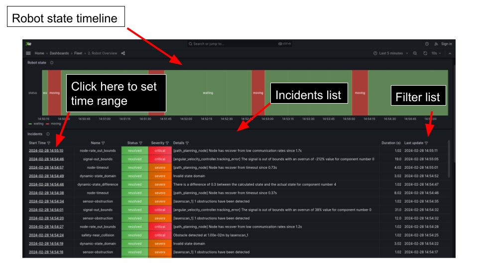

Visualization
Dashboards
In order to visualize your monitoring data. 3LawsRobotics provides a Grafana dashboard. You can access it by opening your web browser and navigating to https://3laws.app. Your credentials will be given to you by your 3LawsRobotics representative.
This dashboards are tailored to quick diagnostic. This means that the workflow will help you dive into the data that is relevant to your current problems. The dashboards are organized in the following way:
General: This dashboard displays your robots that are currently monitored and their current state. It will also gives you a list of the latest events that have been recorded by the monitoring system.
Behavior: This dashboard gives you insights into the behavior of your robot, like his computed safety score, your distance to obstacle, etc.
Hardware: This dashboard expose the hardware health of the robot. It let you quickly see if the current physical behavior of the robot is coherent with your model or if some degradation is happening.
Systems: This is the most important dashboard. It gives information about the system of the robot like signals delay, computer usage and Node status.
Perception: This dashboard make it easy to diagnose a sensors issue like obstructed sensor or noisy sensor.
Control: Finally this dashboard allows you to observe the good tracking and feasibility of the control commands or the planning algorithms
Each dashboard is composed of several panels with always an overview that helps you to quickly see if everything is fine and then more detailed panels that will help you to precisely diagnose the problem.
{kind=link}
Incident Management
The Dashboards display a list of incident, you can use it to navigate directly to the right detailed dashboard. The timestamp of the incident is clickable and will bring to the right detailed dashboard at the time of the incident.
{kind=link}
